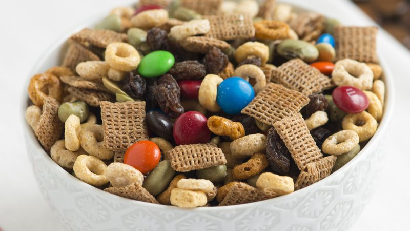

Trail Mix

Ingredients:
- 5 cups Corn Chex
- 5 cups Rice Chex
- 1 Tbsp Seasoned Salt
- 1 cup Peanuts
- 3 Tbsp Worcestershire Sauce
- 1 cup Peanut M&Ms
- 10 Tbsp Butter
- Skinny Pretzels
- Garlic Rye Chips
- Garlic Powder
Steps:
- Combine cereal, peanuts, pretzels, and the rye chips in a large baking trey/pan
- Melt butter and then pour in the Worcestershire sauce, garlic powder, and seasoned salt. Stir to combine
- Pour over the cereal mixture and stir to evenly coat
- Cook at 250F for 1.5 hours, stirring every 30 minutes
- Once it's done cooking, pour in M&Ms and stir to incorporate